About
The MSK-CHORD cohort is a large clinicogenomic cancer dataset containing integrated clinical variables, genomic mutation data, and survival outcomes. In this project, we explored whether hidden patient structure could be identified using combined genomic and clinical features.
Our primary outcome was overall survival. We constructed a patient-level dataset using age, tumor stage, and binary mutation indicators for key cancer driver genes including TP53, KRAS, APC, EGFR, BRAF, PTEN, and RBM10. We then evaluated whether the resulting patient subgroups corresponded to distinct survival risk profiles.
Methods
We constructed a clinicogenomic feature matrix consisting of age, tumor stage, and binary mutation indicators for selected cancer driver genes. Continuous variables were standardized prior to analysis to ensure comparability across features. Principal Component Analysis (PCA) was applied to reduce dimensionality and visualize structure in the feature space. K-means clustering was then used to identify latent patient subgroups, with the number of clusters selected using the elbow method based on within-cluster variation.
Following cluster assignment, overall survival differences were evaluated using Kaplan–Meier estimation and compared using the log-rank test. Cox proportional hazards regression was used to quantify the association between cluster membership and survival risk. Results were interpreted in terms of both statistical significance and clinical relevance.
- Primary outcome: overall survival
- Feature matrix: age, tumor stage, and selected driver-gene mutation indicators
- Dimensionality reduction: principal component analysis (PCA)
- Clustering method: K-means clustering
- Cluster selection: elbow method
- Survival methods: Kaplan–Meier estimation, log-rank test, Cox regression
- Software: R
Results
Three clinicogenomic patient subgroups were identified, each exhibiting distinct survival patterns, clinical characteristics, and genomic profiles. The figures below summarize the cohort-level survival pattern, clustering structure, and differences in survival and feature distributions across the identified clusters.
Overall survival varied substantially across the cohort, motivating the search for latent patient subgroups.
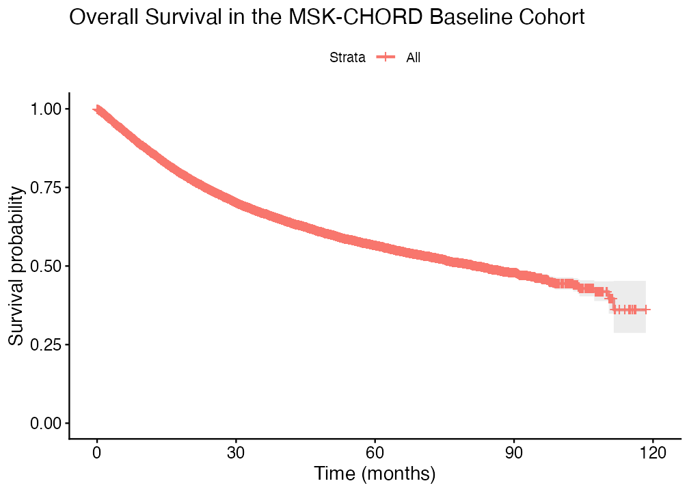
Clinicogenomic features showed structured variation, suggesting the presence of latent patient subgroups.
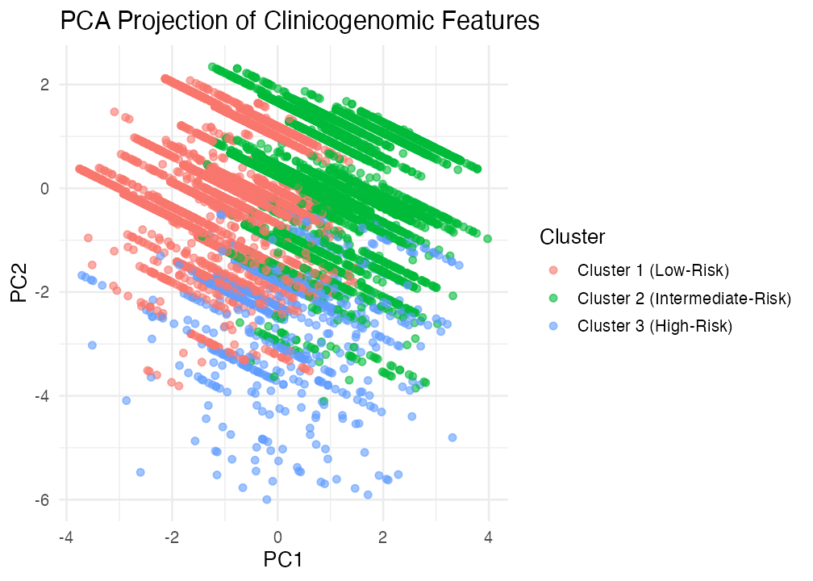
The elbow method supported a three-cluster solution for downstream subgroup identification.
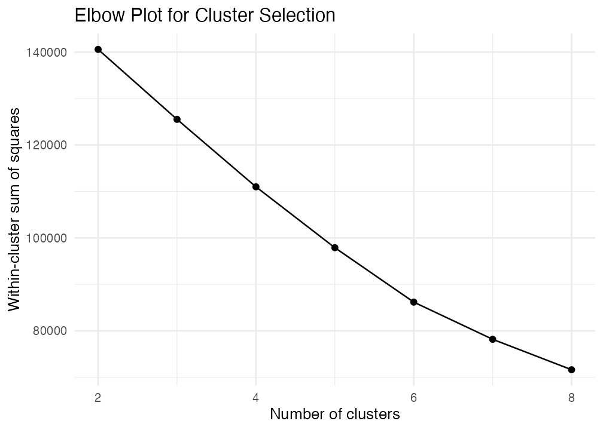
The identified clusters showed clear and statistically significant differences in survival.
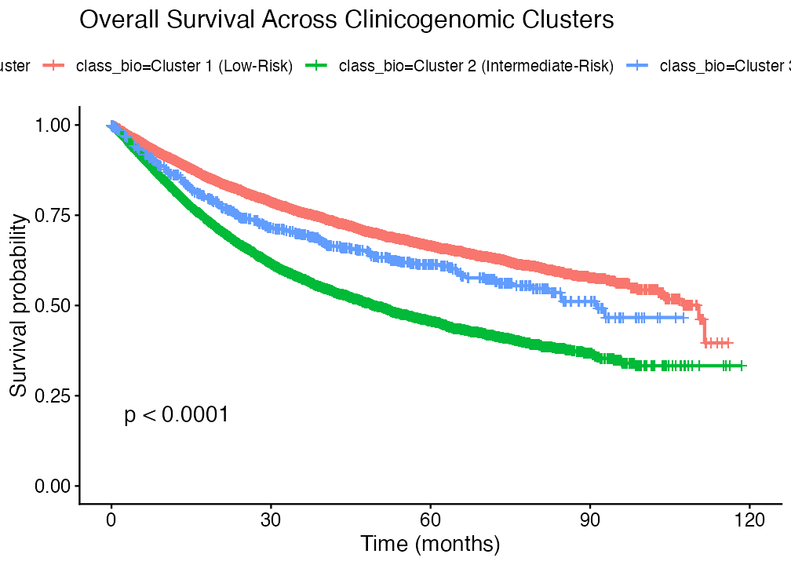
Age differed moderately across clusters, but did not fully explain the observed subgroup structure.
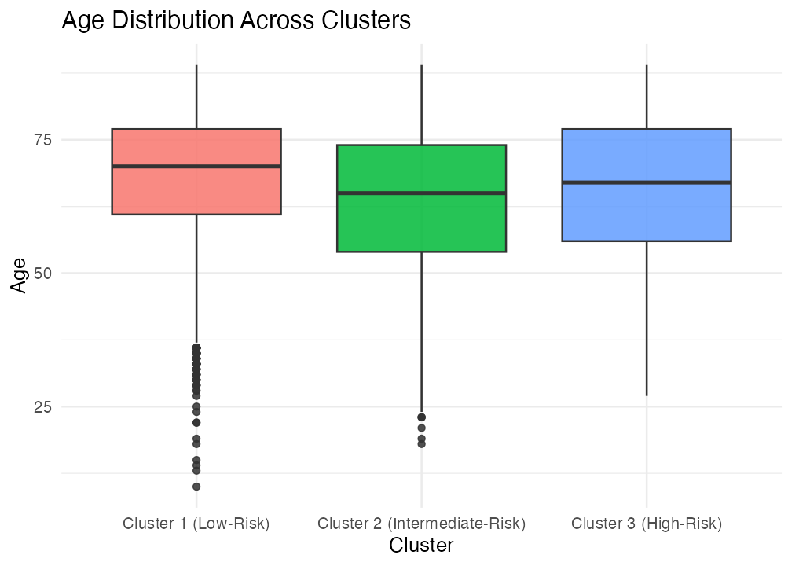
Clusters associated with poorer survival showed a greater proportion of advanced-stage disease.
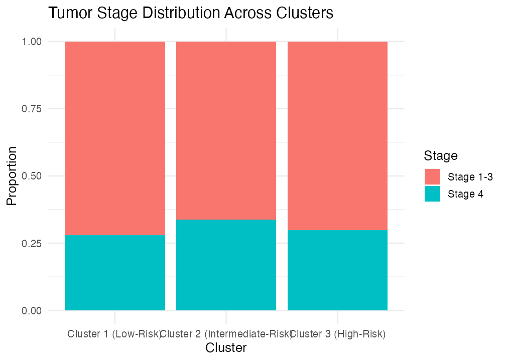
Partial separation in PCA space supported the presence of latent subgroup structure.
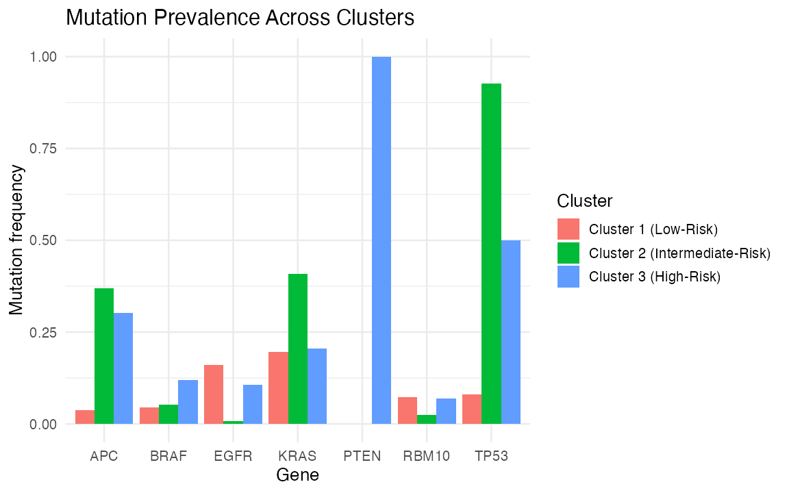
Distinct mutation patterns across clusters suggested biologically meaningful subgroup differences.
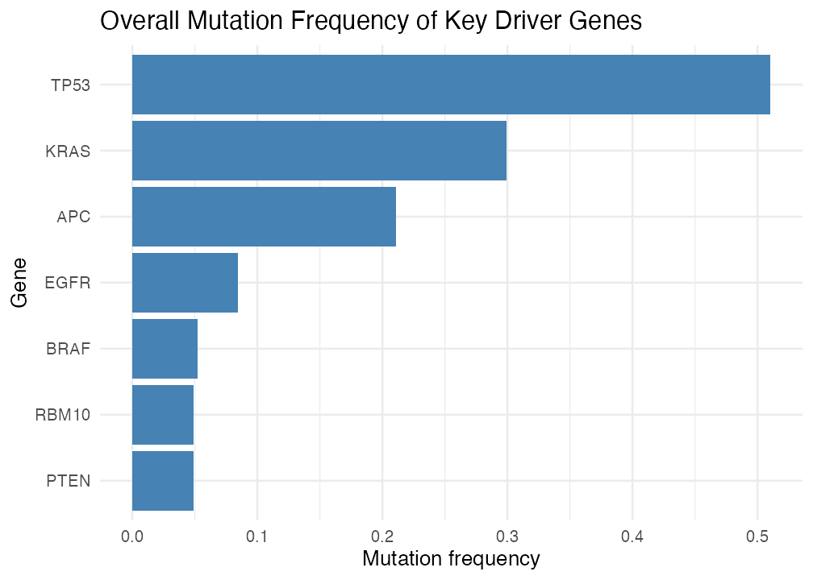
Genomic Survival Modeling
After identifying latent clinicogenomic risk groups, I extended the analysis to evaluate whether selected driver-gene mutations, representative pathway-level alteration groups, and cumulative driver mutation burden were associated with overall survival. This connects the unsupervised clustering analysis with clinically adjusted survival modeling.
Gene-Level Mutation Associations
Selected driver-gene mutations were modeled individually using Cox proportional hazards regression. Models were adjusted for age and tumor stage and stratified by cancer type.
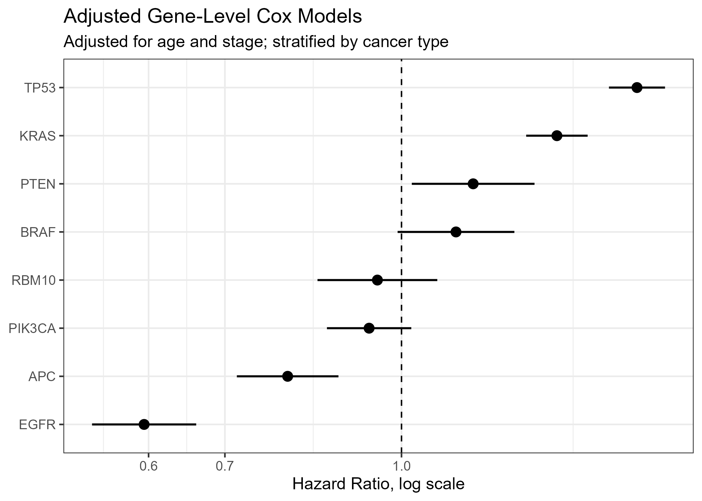
Pathway-Level Alteration Groups
To improve biological interpretability, selected genes were grouped into representative pathway-level categories, including p53/genomic instability, MAPK-related signaling, PI3K-AKT-related signaling, Wnt-related signaling, and RNA-splicing-related alterations.
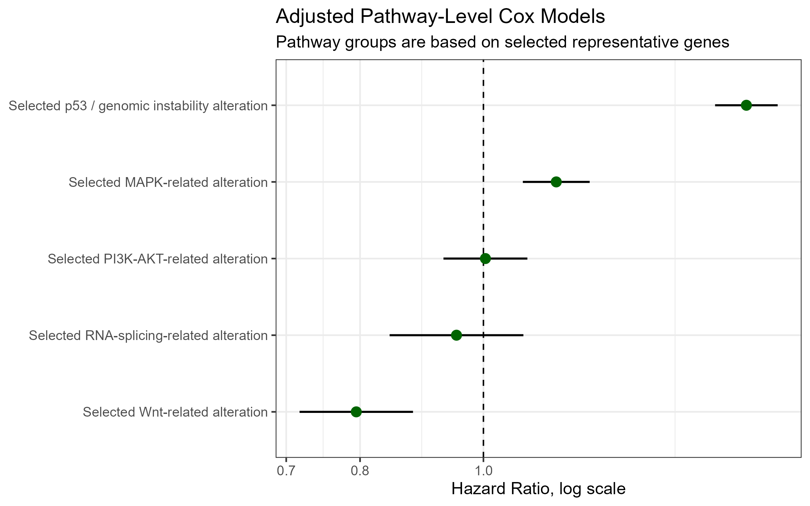
Driver Mutation Burden
I also summarized cumulative alteration burden by grouping patients according to the number of selected driver-gene mutations: 0, 1, or 2 or more mutations. Kaplan-Meier curves were used to visualize survival differences across these mutation-burden groups.
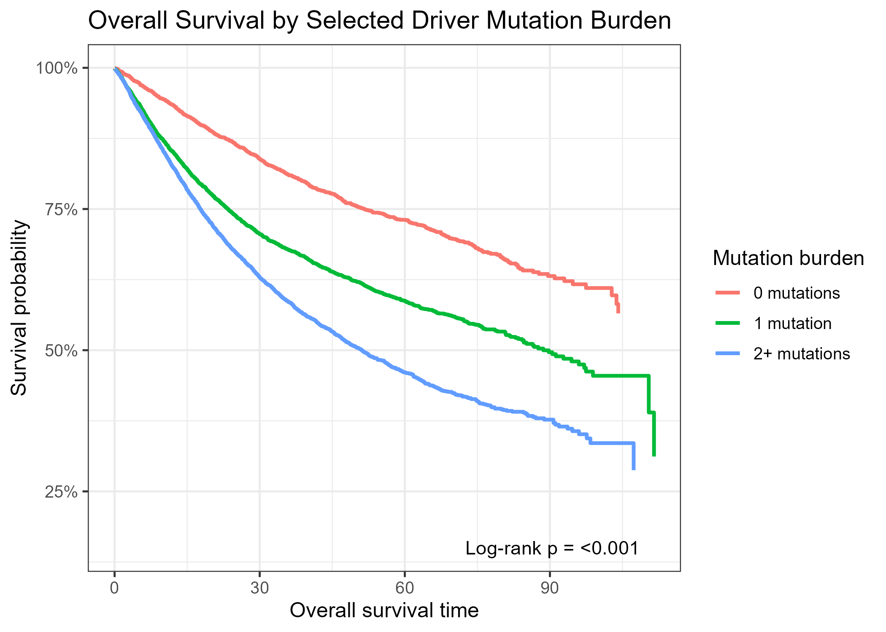
An adjusted Cox model was then used to evaluate whether mutation burden was associated with overall survival after accounting for age, tumor stage, and cancer type.
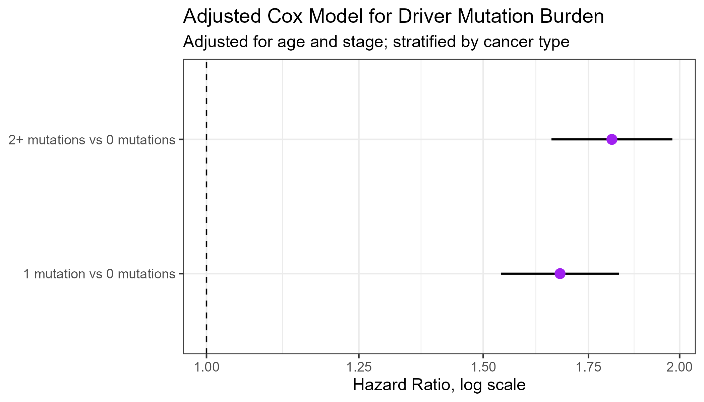
Integrated Interpretation
Together, the latent risk stratification and genomic survival modeling analyses provide complementary views of survival heterogeneity in the MSK-CHORD cohort. The clustering analysis identified broad clinicogenomic patient subgroups, while the Cox models evaluated whether selected mutations, pathway-level alteration groups, and mutation burden were associated with overall survival after clinical adjustment.
Limitations
This analysis is based on selected driver genes rather than a complete genome-wide mutation profile. The pathway-level groups are representative summaries and should not be interpreted as full pathway annotations. Because the cohort is observational, associations should not be interpreted as causal. Cluster assignments also depend on the selected input features, preprocessing choices, and clustering method.
Team
- Nandhana Nambi · University of Michigan